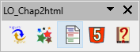
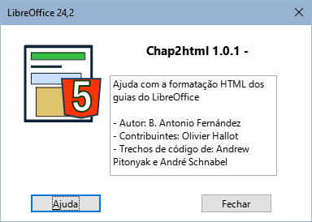

|
Português |
Macros para preparar guias online do LibreOffice.
Este documento é protegido por direitos autorais ©2024 pela equipe de documentação do LibreOffice. Os contribuidores estão listados abaixo. Pode ser distribuído e modificado nos termos do GNU General Public License versão 3 ou posterior ou do Creative Commons Attribution License versão 4.0 ou posterior.
Todas as marcas registradas mencionadas neste guia pertencem aos seus legítimos proprietários.
|
Autor |
Colaboradores |
|
B. Antonio Fernández |
Olivier Hallot |
Fontes
As macros que compõem a extensão aqui descrita são o resultado da consulta de diferentes fontes que nomeio em termos gerais, uma vez que me é impossível entrar em detalhes. Estes são:
A documentação da LibreOffice Basic e dos diferentes derivados do StarOffice.
Os livros: Aprendiendo OooBasic por Mauricio Baeza, OpenOffice.org Macros Explained por Andrew Pitonyak e Programmation OpenOffice.org por Bernard Marcelly.
Bem como diversas consultas aos fóruns OpenOffice e LibreOffice e o estudo de outras macros nas extensões para LibreOffice.
Chap2Html é uma biblioteca de macros para o Writer que tem como objetivo ajudá-lo a preparar capítulos do guia do LibreOffice para exportação para HTML e visualização online.
As macros adaptam alguns formatos dos documentos ODT em uma única passagem para exportação para HTML, evitando o caro trabalho de adaptá-los manualmente.
Importante
Você deve ter duas cópias dos arquivos de capítulos com o mesmo nome: o original do arquivo-fonte, destinado ao formato pdf ou impresso, e uma cópia para preparação e exportação para html.
Como possuem o mesmo nome, devem ser armazenados em diretórios diferentes.
Certifique-se de trabalhar na cópia destinada à exportação HTML antes de usar as macros, pois nem todas as alterações feitas são reversíveis.
As macros são empacotadas como uma extensão e instaladas como qualquer outra extensão, a partir do gerenciador de extensões. Se você encontrar problemas para atualizar ou instalar uma nova versão, desinstale a versão antiga e instale a nova versão.
As macros são escritos em LO Basic portanto devem ser compatíveis com qualquer sistema operacional com a única dependência dos filtros xhtml incluídos na extensãon Writer2xhtml que pode ser baixado em LibreOffice extensions official page.
A extenxao Adiciona uma barra de ferramentas (Figura 1), bem como um menu chamado LO Chap2html. As ferramentas também aparecem integradas à interface do usuário em abas.
As ferramentas não possuem diálogos iniciais, mas após a execução será exibida uma mensagem com informações sobre as alterações.
Estão disponíveis em espanhol, inglês e português, com possibilidade de agregar outros idiomas adicionando traduções ao módulo L10n.

Figura 1: Barra de ferramentas Chap2html
No texto dos avisos podem haver quebras de parágrafo e embora o Writer utilize uma única linha no final do texto, em html cada parágrafo aparece com uma linha.
A macro altera as quebras de parágrafo em quebras de linha em cada parágrafo do texto do aviso para obter a mesma aparência do PDF ou dos guias impressos.
Nos guias ODT há referências aos números das páginas do documento. Em HTML o documento possui uma única página, portanto essas referências não são válidas.
A macro altera as referências de página no formato “na página XX” para acima ou abaixo dependendo da localização do título. Esta função não é infalível, portanto insere um comentário em cada substituição para que possa ser revisada manualmente.
A cor da fonte dos títulos nos guias HTML é diferente dependendo do componente do LibreOffice com o qual o guia trata; para fazer isso, os estilos dos títulos dos documentos devem ser alterados. Com esta macro você evita alterações manuais em cada capítulo com possíveis erros na seleção de cores ou na utilização de modelos separados para cada guia.
A macro altera automaticamente a cor da fonte dos títulos com base nas letras no início do nome do arquivo e na cor atribuída a cada componente.
A macro adiciona seis seções adicionais necessárias para o formato HTML.
Nota
- Os filtros de extensão Writer2html são usados porque cria um arquivo html5 e o código resultante é mais limpo que a exportação nativa do LibreOffice.
Importante
Certifique-se de usar o Writer2xhtml versão 1.7 “Final” ou superior. Com a versão 1.7 beta, o formato da lista ordenada não é exportado corretamente.
Abre uma caixa de diálogo com informações da versão (Figura 2)

Figura 2: Caixa de diálogo Info
Se você leu até aqui, terá visto muitos erros de vocabulário e gramaticais.
Este documento foi traduzido do espanhol com o Google (algumas correções feitas por mim).
Lamento que meu português seja tão ruim, mas espero que este documento seja compreensível.